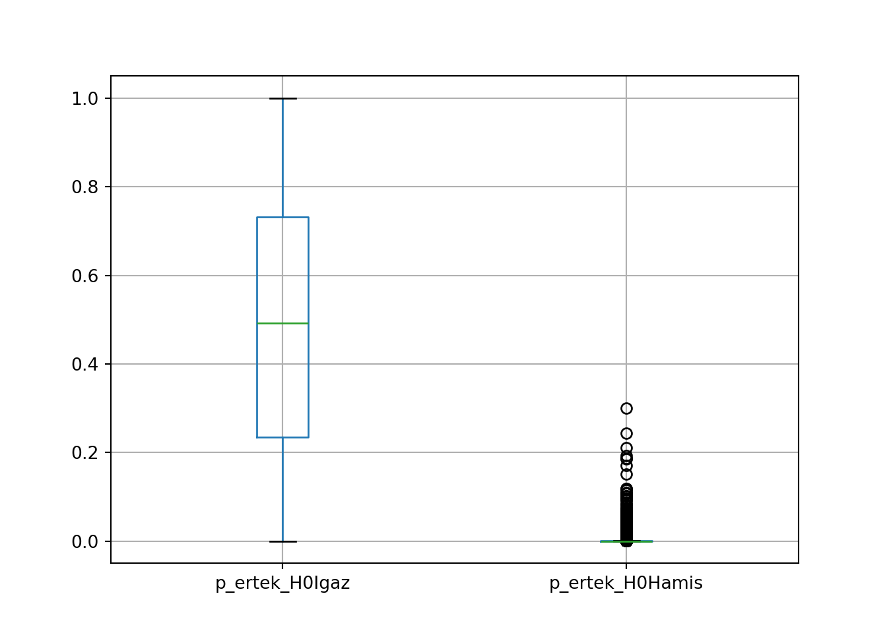

9 Hipotézisvizsgálat alapjai
9.1 A hipotézisvizsgálat alapgondolata
Istenigazából a hipotézisvizsgálat csak egy alternatív mód a konfidencia-intervallumok mellett egy statisztikai mutatószám (paraméter) mintavételi hibájának figyelembe vételére, amikor a mutatószám egy mintából számított értékéből akarjuk megismerni a valós, sokasági értékét. Azonban, a hipotézisvizsgálat gondolatvilága a kérdést némileg eltérően közelíti meg, mint az eddig tanult konfidencia-intervallumok.
Hipotézisvizsgálat során megfogalmazunk egy állítást vagy szebb szóval hipotézist egy statisztikai mutatószám (átlag, arány, medián, szórás, stb.) valós, sokasági értékéről, és utána megpróbáljuk állítani, hogy ezt a felvetést/hipotézist a megfigyelt mintaadatok alátámasztják-e vagy sem. Most így alapesetben a paraméteres statisztikai hipotézisvizsgálatokat vagy rövidebben az úgynevezett paraméteres (statisztikai) próbákat vizsgáljuk, mert a megfogalmazott hipotézisünk mindig egy statisztikai paraméter (azaz statisztikai mutatószám) valós, sokasági értékéről szól majd egyelőre.
Nézzünk meg ismét egy \(n=100\) elemű FAE mintát a 2022-es Balaton átúszást teljesítők sokaságából a LIDLBalaton2022.xlsx fájl alapján.
Ahogy a 3. heti tananyagban is néztük, ebben a fájlban a Balaton átúszás résztvevőinek neve, neme és percben mért időeredménye található. Ez az adatsor lesz most is a sokaságunk.
# Elemzéshez és ábrázoláshoz szükséges csomagok betöltése
import numpy as np
import pandas as pd
import matplotlib.pyplot as plt
import scipy.stats as stats
# Adatbeolvasás data frame-be
Balcsi = pd.read_excel("LIDLBalaton2022.xlsx")
Balcsi.info()## <class 'pandas.core.frame.DataFrame'>
## RangeIndex: 9751 entries, 0 to 9750
## Data columns (total 3 columns):
## # Column Non-Null Count Dtype
## --- ------ -------------- -----
## 0 Nev 9751 non-null object
## 1 Nem 9751 non-null object
## 2 PERC 9751 non-null float64
## dtypes: float64(1), object(2)
## memory usage: 228.7+ KBSzuper, vegyük is ki azt az \(n=100\) elemű FAE mintát! Rögzítsük meg a random_state paraméter \(1992\)-nek, hogy mindannyian ugyan azt a \(100\) elemű véletlen mintát kapjuk!
## <class 'pandas.core.frame.DataFrame'>
## Index: 100 entries, 7991 to 5727
## Data columns (total 3 columns):
## # Column Non-Null Count Dtype
## --- ------ -------------- -----
## 0 Nev 100 non-null object
## 1 Nem 100 non-null object
## 2 PERC 100 non-null float64
## dtypes: float64(1), object(2)
## memory usage: 3.1+ KBNamármost. A teljes sokaság átlagos átúszási idejéről \(6\) db különböző állítást tudok megfogalmazni egy konkrét érték, pl. az \(2.5\) óra, azaz \(150\)perc viszonylatában. A valós, sokasági átlagos időeredményt most is \(\mu\)-vel jelöljük:
- Optimista vagyok, és azt mondom, hogy gyorsak voltak a népek és az átlagos átúszási idő a sokaságban kisebb, mint \(150\) perc: \(\mu < 150\)
- Pesszimista magyarként azt is mondhatom, hogy lassú volt az úszótömeg és az átlagos időeredmény a sokaságban nagyobb, mint \(150\) perc: \(\mu > 150\)
- De még azt is el tudom képzelni, hogy a valós átlag úszási idő épp \(150\) perc: \(\mu = 150\)
- Vagy abban is hihetek, hogy a sokaságban az átlag időeredmény minden csak nem \(150\) perc: \(\mu \neq 150\)
- A félig optimista mondhatja azt, hogy a sokasági átlagos időeredmény legfeljebb \(150\) perc: \(\mu \leq 150\)
- Kizárásos alapon a félig pesszimista pedig úgy fog vélekedni, hogy a sokasági átlagos úszási idő legalább \(150\) perc: \(\mu \geq 150\)
Oké, akkor van \(6\) db elméletem…azaz hipotézisem. Nézzük meg mennyi az átlag a megfigyelt \(100\) elemű mintában:
## 164.44033333333334No, a megfigyelt \(100\) átúszó alapján a mintaátlag kb. \(164\) perc. Ez alapján a 2. állítás, a pesszimista ürge mondása tűnik igaznak, az átlag nagyobb, mint \(150\) perc. NODE! Amit itt látunk az csak \(100\) ember átlagos ideje, a teljes sokaságban az átlagos átúszási idő ettől eltérhet!
Szebben fogalmazva, a \(164\) és \(150\) közti különbség simán betudható a mintavételi hibának is!!
Ezért végzünk hipotézisvizsgálatot, hogy eldöntsük, hogy a \(\mu > 150\) hipotézis (állítás) igaznak vehető-e még a mintavételi hibával együtt is.
Igazából, ha belegondolunk, akkor mind a \(6\) állítás visszavezethető ahhoz a kérdéshez, hogy a valós, sokasági átlag, \(\mu\) eltér-e annyira a \(150\)-től, hogy az eltérés már meghaladja a mintavételi hibát. Ezt úgy mondjuk szépen, hogy azt vizsgáljuk, SZIGNIFIKÁNS-e az eltérés a valós \(\mu\) és \(150\) között!
Most itt éppen ki tudjuk számolni a teljes sokaság ismeretében, hogy \(\mu=167\) perc, ami tényleg magasabb, mint \(150\).
## 167.52914060096398A gyakorlatban viszont mindezt NEM tudjatjuk, hiszen csak az \(n=100\) elemű minta áll rendelkezésünkre!! Szóval marad az, hogy hipotézisvizsgálattal ellenőrizzük, hogy a \(\bar{y}=164\) megfigyelt mintaátlag szignifikánsan eltér-e a \(150\)-től.
Az eddigi logikánk alapján létre tudunk hozni egy úgynevezett nullhipotézist (\(H_0\)) és alternatyv hipotézist (\(H_1\)) az eredeti állításunkból.
A pontos logika itt a következő. A \(H_0\)-ban mindig olyan állítást fogalmazunk meg, ami a vizsgált statisztikai paraméter tekintetében megengedi az egyenlőséget.
A \(H_1\) pedig az eredeti állítástól függ:
- Ha az eredeti állítás megengedi az egyenlőséget, akkor az állítás \(H_0\)-ba kerül és a \(H_1\)-ben tagadjuk az eredeti állítást. Ebből adódóan azt várjuk, hogy a hipotézisvizsgálat végén a \(H_0\) állítás bizonyuljon igaznak. Ebben az esetben azt szeretnénk, hogy a valós sokasági átlag átúszási idő ne különbözzön szignifikánsan a \(150\) perctől.
- Ha az eredeti állítás nem engedi meg az egyenlőséget, akkor az a \(H_1\)-be “költözik”, és a \(H_0\)-ban az eredeti állítást tagadjuk. Ebből adódóan azt várjuk, hogy a hipotézisvizsgálat végén a \(H_1\) állítás bizonyuljon igaznak. Ebben az esetben azt szeretnénk, hogy a valós sokasági átlag átúszási idő szignifikánsan különbözzön a \(150\) perctől.
Ezen elveket figyelembe véve a \(6\) eredeti állításunkhoz a következő \(H_0\) és \(H_1\) párok adhatók meg:
- Állítás: \(\mu < 150\) || \(H_0:\mu \geq 150\) || \(H_1:\mu < 150\) || Állítás a \(H_1\)-ben található.
- Állítás: \(\mu > 150\) || \(H_0:\mu \leq 150\) || \(H_1:\mu > 150\) || Állítás a \(H_1\)-ben található.
- Állítás: \(\mu = 150\) || \(H_0:\mu = 150\) || \(H_1:\mu \neq 150\) || Állítás a \(H_0\)-ban található.
- Állítás: \(\mu \neq 150\) || \(H_0:\mu = 150\) || \(H_1:\mu \neq 150\) || Állítás a \(H_1\)-ben található.
- Állítás: \(\mu \leq 150\) || \(H_0:\mu \leq 150\) || \(H_1:\mu > 150\) || Állítás a \(H_0\)-ban található.
- Állítás: \(\mu \geq 150\) || \(H_0:\mu \geq 150\) || \(H_1:\mu < 150\) || Állítás a \(H_0\)-ban található.
Az 1-2. és 5-6 állításokban, ahol nem “tiszta” egyenlőség van \(H_0\)-ban szoktunk úgynevezett technikai nullhipotézist, \(H_0^T\)-t alkalmazni. Ez csak annyit jelent, hogy a nem “tiszta” egyenlőséggel adott \(H_0\)-t átírjuk tiszta egyenlőségre.
Tehát, pl. az 1. és 5. állítás technikai nullhipotézissel:
- Állítás: \(\mu < 150\) || \(H_0^T:\mu = 150\) || \(H_1:\mu < 150\) || Állítás a \(H_1\)-ben található.
- Állítás: \(\mu \leq 150\) || \(H_0^T:\mu = 150\) || \(H_1:\mu > 150\) || Állítás a \(H_0\)-ban található.
A hipotézisvizsgákat vagy más néven statisztikai próbákat a \(H_1\)-ben adott relációs jeleik alapján három csoportba kategórizálják:
- Ha \(H_1\)-ben \(\neq\) jel van, akkor kétoldali próba
- Ha \(H_1\)-ben \(<\) jel van, akkor baloldali próba
- Ha \(H_1\)-ben \(>\) jel van, akkor jobboldali próba
9.1.1 A p-érték fogalma
Ha szépenfelírtuk a megfelelő \(H_0\) és \(H_1\) párokat, akkor meghatározzuk, hogy a megfigyelt mintánk alapjánk melyik tekinthető igaznak a kettő közül. Erre a célra egy p-érték nevű statisztikai mutatószámot használunk. A p-érték megadja mekkora a valószínűsége, hogy a \(H_0\) elutasításával hibás döntést hozunk
Szóval, ha azt kapom, hogy p-érték = 30%, akkor azt mondhatom, hogy 30% valószínűséggel HIBÁZOM, ha azt mondom, hogy \(H_0\) egy hamis állítás a mintánk alapján.
Ez alapján a döntési szabály \(H_0\) és \(H_1\) között a következő. Amennyiben a p-érték túl magas, elfogadjuk \(H_0\)-t, mivel elutasítása túl nagy hibavalószínűséggel járna. Ellenben ha a p-érték túl alacsony, akkor elutasítjuk \(H_0\)-t és elfogadjuk \(H_1\)-et, mivel \(H_0\) elutasítása nagyon alacsony hibavalószínűséggel jár.
A kérdés az hogyan döntöm el, hogy egy p-érték túl magas/alacsony-e? Erre van nekünk az úgynevezett szignifikancia-szint, amit \(\alpha\)-val jelölünk. A szignifikancia-szint a maximális elfogadott hibavalószínűség \(H_0\) elutasításához.
Tehát, ha azt mondjuk, hogy \(\alpha=5\%\), akkor \(5\%\) alatti p-érték esetén elutasítjuk \(H_0\)-t, mivel elutasítása kisebb hibával jár, mint a megengedett maximum. Másrészről, ha a p-értékünk \(5\%\) feletti, akkor meg elfogadjuk \(H_0\)-t, mivel elutasítása nagyobb hibával jár, mint a megengedett maximum.
Ezen a ponton tehát a következőt hinnénk:
- p-érték \(>\alpha \rightarrow H_0\)
- p-érték \(\leq\alpha \rightarrow H_1\)
De természetesen AZ ÉLET SOSEM ILYEN EGYSZERŰ!! a fő probléma itt abból jön, hogy simán lehetnek olyan mintaadataink, hogy a meghozott döntés marhára függ attól mit mondok pontosan \(\alpha\)-nak! Pl. oké, maximum megenegedett hibavalószínűségem \(\alpha=5\%\). A p-értékre meg kapok egy \(4.8\%\)-ot. Na akkor \(\alpha=5\%\) esetén elutasítanánk \(H_0\)-t, de egy \(\alpha=3\%\)-nál már épp elutasítanánk \(H_0\)-t.
Emiatt alkalmazzuk a szokásos szignifikancia-szintek tartományát, ami \(1\%-10\%\) között mozog. Nem akarunk \(10\%\)-nál nagyobb megenegedett \(\alpha\) hibát, mert az már tényleg magas hibavalószínűség. Másrészről meg \(0\%\) hibavalószínűségünk meg csak úgy lehet, ha megfigyeljük az egész sokaságot, és tudjuk mennyi a vizsgált statisztikai paraméter valós, sokasági értéke. Ekkor meg pont a mintavétel lényegét veszítjük el, hogy nem kell megfigyelni minden múltbeli és jövőbeli adatpontot ahhoz, hogy dönteni tudjunk a vizsgált mutatószámunk valós, sokasági értékéről. Ez utóbbi \(\alpha=0\%\) eset hasonló ahhoz, amikor azt mondtuk, hogy a \(100\%\) megbízhatóságú konfidencia-intervallumnak sincs semmi értéelme, mert akkor azt mondanánk, hogy a mintavételünk alapján a vizsgált statisztikai mutatószámunk (paraméterünk) bárho lehet \(\pm\infty\) között… :)
Továbbá, majd szimulációkból látni fogjuk, hogy \(1\%\) és \(10\%\) közti p-értéket simán produkál a valóságban igaz és hamis \(H_0\) állítás is!
Szóval, az előbbi családregényünk alapján az tűnik egy normálisabb megoldásnak, ha azt mondjuk, hogy \(1\%\) és \(10\%\) közti p-érték esetén nem választunk \(H_0\) és \(H_1\) között, mert ekkor a döntésünk nagyon érzékeny lenne a konkrét \(\alpha\) megválasztására
Ha egy \(1\%\) és \(10\%\) közti p-értéket produkálnak a mintaadataink, akkor a legjobb, amit tehetünk, hogy addig növeljük a mintaméretet (\(n\)-t) amíg a p-érték egyértelműen \(1\%\) alá vagy \(10\%\) fölé nem kerül. Ezt a módszert hívja a statisztika szekvenciális analízisnek, és a klinikai gyógyszerkísérletekben és az ipari minőségbiztosításban rendszeresen alkalmazzák. A módszer alapjait pedig egy Wald Ábrahám nevű magar statisztikus dolgozta ki az Amerikai Légierőnek a II. világháború alatt (zsidó származása miatt itthon “nem kellett”). Szóval, mint minden fontos területet a világon, ezt is magyarok találták ki. :)
Tehát, az egy fokkal korrektebb döntés szabályok hipotézisvizsgálat esetén:
- p-érték \(>10\% \rightarrow H_0\)
- \(1\% <\) p-érték \(\leq 10\% \rightarrow\) nincs döntés
- p-érték \(\leq1\% \rightarrow H_1\)
További fejfájásokat okoz, hogy nagyon óvatosan kell bánni az \(1\%\) és \(10\%\) közti p-értékkel azért is, mert a p-érték és az \(\alpha\) csak egy nézőpontból írják le a hipotézisvizsgálat során elkövethető döntési hibát! A p-érték és az \(\alpha\) csak az úgyenevzett ELSŐFAJÚ hibáról ad információt: a valóságban igaz \(H_0\) elutasításának valószínűségéről!
NODE, van nekünk MÁSODFAJÚ hibánk is, ami a valóságban hamis \(H_0\) téves elfoggadását jelenti. Az a rossz hír, hogy ennek a másodfajú hibának a valószínűségét nem tudjuk kiszámolni a megfigyelt minta alapján!!
Ez a hipotézoisvizsgálat nagy átka: ha elfogadunk egy \(H_0\)-t, akkor igazából nem tudjuk, hogy mekkora valószínűséggel hibázunk, csak azt tudjuk, hogy mennyi a \(H_0\) elutasításának hibavalószínűsége, mert ez pont a p-érték.
Ezért nagyon sokan fogalmaznak szándékosan ilyen furán a \(H_0\)-ról, hogy nem elfogadjuk a \(H_0\)-t, hanem nem tudjuk elutasítani a \(H_0\)-t.
A probléma alaposabb megértésében szerintem remek szolgálatot tesz az alábbi mém. :)

Most pedig nézzük meg hogyan kell kiszámolni a p-értéket a megfigyelt minta alapjánabban az esetben, amikor a vizsgált statisztikai paraméter az átlag, azaz \(\mu\)!
9.2 A sokasági átlagra vonatkozó t-próba
A p-érték számításához mindig szükségünk van egy próbafüggvény nevű statisztikai mutatóra, amit csak a megfigyelt mintaadatokból ki tudunk mindig számolni. Eztán a p-értéket a próbafüggvényből egy nevezetes valószínűségi eloszlás (standard normális, t-eloszlás, khi-négyzet, stb.) alapján tudjuk kiszámolni.
Jelöljük a sokasági átlag HIPOTETIKUS értékét \(\mu_0\)-nak. Ez az érték, amit az állításban feltételezek a valós, sokasági átlagról. Az 1. fejezetben ez volt a \(150\) perc. Ezzel a jelöléssel az alábbi módon néz ki az átlagra vonatkozó próbafüggvény: \[\frac{\bar{y}-\mu_0}{\frac{s}{\sqrt{n}}}\]
Tehát, a próbafüggvényünk most nem más, mint a minta és hipotetikus átlag különbsége osztva az átlag standard hibájával.
Ha a \(H_0\)-ban jól okoskodunk, és tényleg sikerült a valós \(\mu\) sokasági átlagot venni a \(\mu_0\) elvi (hipotetikus) átlagnak, akkor sok-sok mintavétel esetén a próbafüggvényünk \(n-1\) szabadságfokú t-eloszlást követ: \[\frac{\bar{y}-\mu}{\frac{s}{\sqrt{n}}} \sim t(n-1)\]
A képlet mögött az az elv nyugszik, hogy a \(\mu = \mu_0\) technikai nullhipotézist (\(H_0^T\)) alkalmazzuk mind a 6 különböző típusú \(H_0\) és \(H_1\) párosnál, így meg tudjuk majd adni a próbafüggvény eloszlását sok-sok mintavétel esetén.
Ezt az egészet gyorsan ellenőrizni tudjuk, ha kiveszünk \(10000\) db \(n=100\) elemű FAE mintát a Balaton átúszók sokaságából, ahogy a 3. heti tananyagban is tettük.
Most csak visszatöltjük a \(10000\) db FAE mintát tartalmazó Excel táblát egy data frame-be, amit a 2. heti tananyagban hoztunk létre. Ez az Excel fájl innen elérhető.
## Elem1 Elem2 Elem3 ... Elem98 Elem99 Elem100
## 0 164.800000 129.066667 156.166667 ... 207.350000 159.666667 165.883333
## 1 152.516667 212.483333 152.900000 ... 307.266667 119.783333 128.216667
## 2 145.666667 185.266667 169.516667 ... 167.733333 228.366667 215.633333
## 3 185.683333 120.333333 201.250000 ... 182.766667 177.666667 112.450000
## 4 117.483333 142.350000 320.266667 ... 188.566667 189.166667 99.916667
## ... ... ... ... ... ... ... ...
## 9995 162.333333 83.350000 146.750000 ... 164.250000 131.933333 128.183333
## 9996 100.416667 161.433333 187.366667 ... 160.483333 168.416667 209.300000
## 9997 146.450000 160.783333 165.483333 ... 158.816667 167.733333 183.400000
## 9998 139.250000 140.466667 130.933333 ... 153.616667 112.366667 196.050000
## 9999 147.316667 173.450000 106.100000 ... 185.616667 171.800000 135.166667
##
## [10000 rows x 100 columns]Oké, az eredményből látjuk is, hogy úgy néz ki a data frame, hogy 1 sor tartalmaz 1 db 100 elemű mintát és a mintaelemeket (tehát a mintába besorsolt versenyző percben mért időeredményét) az oszlopkban tároljuk.
Kiszámoljuk mindenegyes mintavételre a minta átlagos időeredményét és azok korrigált szórását. Csak figyeljünk, hogy az alkalmazott numpy függvényeket axis = 1 paraméterrel használjuk, hogy ne oszlopok, hanem sorok szerint vegyék az átlagokat és a szórásokat. Plusz, figyeljünk, hogy a függvényeket minidg csak az első \(100\) oszlopra engedjük rá, hiszen ott vannak a tényleges mintaelemek. Ezt ugyebár a data framek iloc metódusával tudjuk biztosítani, ahogy a 3. heti tananyag 2. fejezetében csináltuk.
MintaVetelek100Elem['Atlagok'] = np.mean(MintaVetelek100Elem.iloc[:,0:100], axis=1)
MintaVetelek100Elem['Szorasok'] = np.std(MintaVetelek100Elem.iloc[:,0:100], axis=1, ddof=1)
MintaVetelek100Elem## Elem1 Elem2 Elem3 ... Elem100 Atlagok Szorasok
## 0 164.800000 129.066667 156.166667 ... 165.883333 171.261667 42.397078
## 1 152.516667 212.483333 152.900000 ... 128.216667 158.026500 44.288357
## 2 145.666667 185.266667 169.516667 ... 215.633333 172.278833 44.809282
## 3 185.683333 120.333333 201.250000 ... 112.450000 163.434167 45.453383
## 4 117.483333 142.350000 320.266667 ... 99.916667 166.552833 45.814202
## ... ... ... ... ... ... ... ...
## 9995 162.333333 83.350000 146.750000 ... 128.183333 163.682333 41.282298
## 9996 100.416667 161.433333 187.366667 ... 209.300000 164.332833 42.020990
## 9997 146.450000 160.783333 165.483333 ... 183.400000 163.702333 37.947348
## 9998 139.250000 140.466667 130.933333 ... 196.050000 166.423833 39.749948
## 9999 147.316667 173.450000 106.100000 ... 135.166667 173.050333 48.227237
##
## [10000 rows x 102 columns]Ezek után pedig ki tudjuk számolni a próbafüggvényünket egy olyan \(H_0\) és \(H_1\) párosra, amiről tudjuk, hogy a sokaságban \(H_0\) igaz, és egy olyanra, ahol tudjuk, hogy a sokaságban \(H_0\) hamis:
- IGAZ \(H_0\) esete: \(H_0:\mu=167\) és \(H_1: \mu < 167\)
- HAMIS \(H_0\) esete: \(H_0^T:\mu=150\) és \(H_1: \mu > 150\)
mu_0_igaz = np.mean(Balcsi.PERC) # ez ekkor a valós sokasági átlag
mu_0_hamis = 150 # tetszőleges érték
n = 100 # mintaméret
MintaVetelek100Elem['ProbaFv_H0Igaz'] = (MintaVetelek100Elem.Atlagok - mu_0_igaz)/(MintaVetelek100Elem.Szorasok/np.sqrt(n))
MintaVetelek100Elem['ProbaFv_H0Hamis'] = (MintaVetelek100Elem.Atlagok - mu_0_hamis)/(MintaVetelek100Elem.Szorasok/np.sqrt(n))
MintaVetelek100Elem## Elem1 Elem2 ... ProbaFv_H0Igaz ProbaFv_H0Hamis
## 0 164.800000 129.066667 ... 0.880373 5.014890
## 1 152.516667 212.483333 ... -2.145630 1.812327
## 2 145.666667 185.266667 ... 1.059980 4.971924
## 3 185.683333 120.333333 ... -0.900917 2.955592
## 4 117.483333 142.350000 ... -0.213101 3.613035
## ... ... ... ... ... ...
## 9995 162.333333 83.350000 ... -0.931830 3.314334
## 9996 100.416667 161.433333 ... -0.760645 3.410875
## 9997 146.450000 160.783333 ... -1.008452 3.610880
## 9998 139.250000 140.466667 ... -0.278065 4.131787
## 9999 147.316667 173.450000 ... 1.144829 4.779526
##
## [10000 rows x 104 columns]Okké! Akkor miután megvannak a kétféle esetben a próbafüggvényeink, nézzük meg a kétféle próbafüggvények hisztogramja a \(10000\) db mintavétel alapján hogyan alakul a \(t(n-1)\), azaz \(t(100-1)\) eloszlás sűrűségfüggvényéhez képest.
A sűrűségfüggvény hisztogramhoz való illeszkedését ábrázoló kód teljes mértékben az 1. heti tananyag 2.3. és 3. fejezeteiben lévő kódok logikáját követi.
# Igaz és Hamis H0 esetén próbafüggvények kisztogramja
# A 'label' paraméter majd a színfeliratokat adja az ábrán
MintaVetelek100Elem.ProbaFv_H0Igaz.hist(density = True, label="ProbaFv_H0Igaz")
MintaVetelek100Elem.ProbaFv_H0Hamis.hist(density = True, label="ProbaFv_H0Hamis")
# A sűrűségfüggvény x tengelye az Igaz H0 esetén vett próbafüggvények min-max tartományában lesz az 'x' tengelyen
x_tengely = np.arange(np.min(MintaVetelek100Elem.ProbaFv_H0Igaz), np.max(MintaVetelek100Elem.ProbaFv_H0Igaz), 0.01)
# A t-eloszlású sűrűségfüggvény (pdf) értékek az 'y' tengelyen
y_tengely = stats.t.pdf(x_tengely, df = n-1)
# Sűrűségfüggvény felrakása a hisztogramra
plt.plot(x_tengely, y_tengely, label = "t-eloszlás")
# Színfeliratok megjelenítése a jobb felső sarokban
plt.legend(loc="upper right")
# Ábra mutatása
plt.show()Szuper! Tehát igaz \(H_0\) esetén tényleg t-eloszlást követ a próbafüggvény a sok-sok mintavételünk esetén. Hamis \(H_0\) esetén pedig valami más szimmetrikus eloszlás rajzolódik ki a hisztogramon, ami NEM a t-eloszlás. De hogy ez most konkrétan mi, nem annyira érdekel minket. :)
Ebből, hogy a próbafüggvény t-eloszlást követ sok-sok mintavétel esetén, ha \(H_0\) igaz, ki tudjuk számolni a p-értéket. gyakorlatilag területeket számolunk a t-eloszlás sűrűségfüggvénye alatt. A konkrét számoláshoz végig kell gondolnunk, hogy mi a legjobb eset \(H_0\) szempontjából a próbafüggvényre nézve:
- Kétoldali próbák (\(H_0: \mu=\mu_0\) és \(H_1: \mu \neq \mu_0\)) esetén: ha a próbafüggvény pontosan \(0 \rightarrow\) ez az elvi eset arra utal, hogy a hipotetikus átlag és a valós, sokasági átlag ugyanaz, így a \(H_1\) \(0\) valószínűséggel következik be.
- Baloldali próbák (\(H_0: \mu\geq\mu_0\) és \(H_1: \mu < \mu_0\)) esetén: ha a próbafüggvény = \(+\infty \rightarrow\) ez az elvi eset arra utal, hogy a sokasági átlag (\(\mu\)) az pont \(+\infty\), aminél minden \(\mu_0\) kisebb, így a \(H_1\) \(0\) valószínűséggel következik be.
- Jobboldali próbák (\(H_0: \mu=\mu_0\) és \(H_1: \mu > \mu_0\)) esetén: ha a próbafüggvény = \(-\infty \rightarrow\) ez az elvi eset arra utal, hogy a sokasági átlag (\(\mu\)) az pont \(-\infty\), aminél minden \(\mu_0\) nagyobb, így a \(H_1\) \(0\) valószínűséggel következik be.
Ez alapján,ha van egy ismert próbafüggvény értékem, amit \(t\)-vel jelölök, akkor a p-érték a \(t(n-1)\) eloszlásból az alábbi ábrán látható módon számítható ki:
Látható, hogy mindhárom esetben a p-érték úgy lesz kiszámolva, hogy ha a konkrét \(t\) próbafüggvényünk messzebb kerül a \(H_0\) számára legjobb esettől, akkor a p-érték csökken \(\rightarrow\) hiszen egyre kisebb és kisebb hibát vétünk, ha elutasítjuk a \(H_0\)-t!!
Mindezek alapján akkor számoljuk ki a scipy csomag stats.t.cdf függvénye segítségével a p-értéket mind a \(10000\) db mintában a korábban vizsgált két \(H_0\) és \(H_1\) párunkra, ahol egyszer igaz, egyszer pedig hamis volt a \(H_0\):
- IGAZ \(H_0\) esete: \(H_0:\mu=167\) és \(H_1: \mu < 167\)
- HAMIS \(H_0\) esete: \(H_0:\mu=150\) és \(H_1: \mu > 150\)
Figyeljünk arra, hogy az \(1-\) rész a stats.t.cdf függvényen a hamis \(H_0\) esetben a jobboldali próba miatt van:
n = 100 # mintaméret
MintaVetelek100Elem['p_ertek_H0Igaz'] = stats.t.cdf(MintaVetelek100Elem.ProbaFv_H0Igaz, df = n-1)
MintaVetelek100Elem['p_ertek_H0Hamis'] = 1-stats.t.cdf(MintaVetelek100Elem.ProbaFv_H0Hamis, df = n-1)
MintaVetelek100Elem## Elem1 Elem2 ... p_ertek_H0Igaz p_ertek_H0Hamis
## 0 164.800000 129.066667 ... 0.809605 0.000001
## 1 152.516667 212.483333 ... 0.017174 0.036483
## 2 145.666667 185.266667 ... 0.854133 0.000001
## 3 185.683333 120.333333 ... 0.184909 0.001950
## 4 117.483333 142.350000 ... 0.415843 0.000239
## ... ... ... ... ... ...
## 9995 162.333333 83.350000 ... 0.176846 0.000642
## 9996 100.416667 161.433333 ... 0.224338 0.000469
## 9997 146.450000 160.783333 ... 0.157848 0.000241
## 9998 139.250000 140.466667 ... 0.390771 0.000038
## 9999 147.316667 173.450000 ... 0.872480 0.000003
##
## [10000 rows x 106 columns]Remek! Az első és az utolsó \(5\) db minta alapján az elvárt eredményeket kaptuk a p-értékekre: magas értékek igaz \(H_0\), alacsony értékek hamis \(H_0\) esetén. Pontosabb értelmezéshez nézzük meg az \(5.\), azaz a data frame-ben \(4\)-es sorindexszel rendelkező minta esetét:
- Igaz \(H_0\) esetén \(41.58\%\)-os valószínűséggel hibázunk, ha elutasítjuk \(H_0\)-t ezen minta alapján.
- Hamis \(H_0\) esetén \(0.02\%\)-os valószínűséggel hibázunk, ha elutasítjuk \(H_0\)-t ezen minta alapján.
Ugyanakkor a \(2.\) mintában látjuk, hogy a p-érték csak \(1.7\%\) igaz \(H_0\) és \(3.6\%\) hamis \(H_0\) esetén. Szóval, a “nem hozunk döntést, ha a p-érték \(1\% - 10\%\) között mozog”, egy elég jogos szabálynak tűnik! :)
Hasonlóan megerősíti az \(1\% - 10\%\) közötti p-értékek esetén vett óvatosságot, ha az igaz és hamis \(H_0\) esetén vizsgált p-értékeket doboz ábrán vizsgáljuk:

Ahogyan vártuk is, igaz \(H_0\) esetén a p-értékek középső \(50\%\)-a, azaz interkavrtilis trejedelme (\(IKT\)) látványosan magasabban van, mint hamis \(H_0\) esetében. Ugyanakkor, azt is nagyon fontos látni az ábrán, hogy a nagy p-értékek kilógó értéknek számítanak hamis \(H_0\) esetén, de a kis p-értékek nem kilógó értékek igaz \(H_0\) esetében! Tehát, néha megérheto szigorúbb \(\alpha\)-t használni, mint \(1\%\). Sokan csak akkor utasítják el \(H_0\)-t, ha a p-érték kisebb, mint \(0.1\%=0.001\), szóval \(\alpha=0.001\) mellett dolgoznak.
9.2.1 A t-próba beépített függvénnyel
Azért van némi szerencsénk, mert az átlagra vonatkozó t-próba p-értékét szépen ki lehet számolni beépített scipy függvénnyel is!
Vegyük például az 1. fejezet elején kivett \(n=100\) elemű mintát, amit a BalcsiMinta című Python objektumban tároltunk le, ami egy \(100\times3\)-as data frame:
## <class 'pandas.core.frame.DataFrame'>
## Index: 100 entries, 7991 to 5727
## Data columns (total 3 columns):
## # Column Non-Null Count Dtype
## --- ------ -------------- -----
## 0 Nev 100 non-null object
## 1 Nem 100 non-null object
## 2 PERC 100 non-null float64
## dtypes: float64(1), object(2)
## memory usage: 3.1+ KBVizsgáljuk meg ezen a mintán az alábbi \(H_0\) és \(H_1\) párost:
- \(H_0^T:\mu=150\)
- \(H_1 > 150\)
Mivel \(H_1\)-ben \(>\) relációs jel lakik, így jobboldali lesz a hipotézisvizsgálat.
Tudjuk, hogy itt a \(H_1\) lesz igaz, hiszen láttuk korábban, hogy a teljes sokaságban az átlagos átúszási idő \(167.5\) perc. Tehát, valami jó alacsony p-értéket várunk!
Ez szépen ki is jön manuálisan is! Először kiszámoljuk a \(\frac{\bar{y}-\mu_0}{\frac{s}{\sqrt{n}}}\) próbafüggvényt \(\mu_0=150\) mellett, hiszen a hipotézisekben azt nézzük, hogy a valós, sokasági átlag szignifikánsan nagyobb-e, mint ez a feltételezett (hipotetikus) \(150\) perces átlag.
elviátlag = 150
mintaátlag = np.mean(BalcsiMinta.PERC)
s = np.std(BalcsiMinta.PERC, ddof=1)
n = len(BalcsiMinta)
próbafv = (mintaátlag - elviátlag) / (s/np.sqrt(n))
próbafv## 3.719542604812644Remek! Ebből gyorsan is meg is van a \(t(n-1)\) eloszlásból (stats.t.cdf függvénnyel) a p-érték. Most ugye a próbafüggvény felé esés valószínűségét számoljuk, hiszen jobboldali a próba.
## 0.01655831079531156A p-érték alapján elmonható, hogy a most vizsgált \(100\) elemű minta alapján csak \(0.017\%\) a valószínűsége a hibának, ha \(H_0\)-t elutasítjuk. Ez kisebb még a legkisebb szokásos szignifikancia-szintnél, az \(\alpha=1\%\)-nál is, így meghozzuk ezt a döntést és \(H_0\)-t elutasítjuk.
Ez alapján pedig \(H_1\) elfogadható, azaz a sokaságban az átlagos átúszási idő szignifikánsan (mintavételi hibát meghaladó mértékben) nagyobb, mint \(150\) perc.
Most tudjuk, hogy helyesen döntöttünk, mivel láttuk, hogy a sokaságban az átlagos átúszási idő \(167.5\) perc.
Mindez szerencsére elintézhető a scipy csomag stats.ttest_1samp függvényével is. Ha a függvény
- első paraméterében megadjuk az aktuális mintánk elemeit tartalmazó oszlopot egy data frame-ből,
- második paraméterben az elvi átlagot, azaz \(\mu_0\)-t,
- az
alternativeparaméterben pedig a próba oldalát \(H_1\) relációs jele alapján- lehetséges értékek:
‘two-sided’, ‘less’, ‘greater’, rendre a \(\neq\), \(<\), \(>\) relációs jeleket jelölik \(H_1\)-ben
- lehetséges értékek:
Akkor a függvény megadja a t-próba p-értékét és a próbafüggvényt is:
## TtestResult(statistic=3.7195426048126436, pvalue=0.00016558310795314698, df=99)Szuper, ugyan úgy megvan a próbafüggvény (\(3.7195\)) és a \(0.017\%\)-os p-érték is! :)
9.2.2 A t-próba előfeltételei
Természetesen, ennek a t-próbás hipotézisvizsgálatnak is vannak előfeltételei, mint ahogy a különböző konfidencia-intervallum képleteknek is voltak. Ha ezek a feltételek nem teljesülnek, akkor bármi is jött ki p-értékre, azt nem használhatjuk döntésre \(H_0\)-ról és \(H_1\)-ről, hiszen az alkalmazott képletek mögötti követelmények az adatokal szemben NEM teljesülnek.
A t-próbának alapvetően két feltételére kell odafigyelni:
- Amennyiben kis mintánk (\(n\leq30\)) van, akkor feltesszük, hogy az adatok, amikből a mintát vettük normális eloszlást követnek
- Ha a minta elemszáma nagy (\(n>30\)), akkor nem kell semmi extra előfeltételre figyelni.
Most az \(n=100\) elemű mintánk a Balaton átúszók sokaságából nagy minta, hiszen \(100>30\), de azért nézzünk rá az időeredmény adatok eloszlására a minta alapján:
Hm, bár a nagy mintaelemszám miatt ez nem számít, de azért megnyugtató, hogy az átúszási idők eloszlása nem olyan durván tér el a normális eloszlás sűrűségfüggvényétől. Csak nagyon enyhén van egy kis jobbra elnyúló jellege, de semmi vészes. :)
9.3 A sokasági átlagra vonatkozó z-próba
Ugyebár az átlagra vonatkozó konfidencia-intervallumok esetén megfigyeltük, hogy nagy szabadságfok (\(df>30\)) esetén a t-eloszlás lényegében megegyezik a standard normális eloszlással.
Azaz, kicsit matekosabban fogalmazva: ha \(n >30\), akkor igaz nullhipotézis (\(H_0\)) esetén (tehát, amikor \(\mu_0\) helyére épp a valós, sokasági átlagot, azaz \(\mu\)-t helyettesítjük), a próbafüggvényünk standard normális (\(N(0,1)\)) eloszlást követ: \[\frac{\bar{y}-\mu}{\frac{s}{\sqrt{n}}} \sim N(0,1)\]
Ez alapján pontosan ugyan azon az elven számíthatunk a próbafüggvényből p-értéket, amit a 2. fejezetben a t-eloszlásnál is alkalmaztunk. Mivel a null-és alternatív hipotézis nem változott meg (\(H_0^T:\mu=150\) és \(H_1 > 150\)), így marad a jobboldali próba, és mivel a mintaelemek sem változtak a 100 elemű mintánkban, így a próbafüggvény is megegyezik a 2.1. fejezetben használttal.
Mivel maradt a jobboldali próba, így a próbafüggvény fölé esés valószínűségét kell megadni a standard normális eloszlásban a stats.norm.cdf függvény \(1-\) verziójával.
## 0.009979194034781536## 0.01655831079531156Mindkét p-érték nagyjából \(0.01\%\) körüli, szóval a standard normális és t-eloszlás között tényleg nincs érdemi különbség a p-érték számolás tekintetében.
Természetesen, mindez beépített függvénnyel is meg tudjuk oldani, csak ez most a statsmodels csomag stats.weightstats moduljában lakó ztest függvény lesz. A név (z test = z próba) onnan jön, hogy a standard ormális eloszlás jele a matekban \(z\), így ez a hipotézisvizsgálat z-próba néven fut, míg az előző t-próba néven, mivel ott a p-értéket t-eloszlásból számoltuk.
Paramétereiben a függvény ugyan úgy működik, mint a scipy-os stats.ttest_1samp:
- először megadjuk aktuális mintánk elemeit tartalmazó oszlopot egy data frame-ből
- utána jön a
valueparaméterben az elvi átlag (\(\mu_0\)) - végül pedig az alteranítv hipotézisben lévő relációs jelet adjuk meg szövegesen
- lehetséges értékek:
‘two-sided’, ‘smaller’, ‘larger’, rendre a \(\neq\), \(<\), \(>\) relációs jeleket jelölik \(H_1\)-ben
- lehetséges értékek:
Ezek alapján az alábbi módon néz ki a függvény használata Pythonban.
# függvény importja
from statsmodels.stats.weightstats import ztest
# függvény használata
ztest(BalcsiMinta.PERC, value = 150, alternative = 'larger')## (3.7195426048126436, 9.979194034785673e-05)Meg is van a \(3.7\)-es próbafüggvényünk és a \(0.0099\% \approx 0.01\%\) körüli p-értékünk. Győzelem!
9.4 A sokasági arányra vonatkozó z-próba
Természetesen, nem csak sokasági átlagokra (\(\mu\)), hanem sokasági arányokra (\(P\)) is tudunk hipotéziseket tenni. Majd ehhez is tudunk p-értéket számolni és eldönteni, hogy az eredeti állításunkból felírt \(H_0\) vagy \(H_1\) tekinthető-e igaznak egy adott \(\alpha\) szignifikancia-szinten.
Nézzük meg, hogy vehető-e 1/3-nak a Balatont 3 óra felett átúszók aránya. Matematikailag az állításom azt mondja, hogy a 3 óra = 180 perc felett átúszók sokasági aránya egyenlő 1/3-dal: \(P = 1/3\). Mivel az állítás engedi az egyenlőséget, így az a \(H_0\)-ba kerül. Ez alapján pedig a \(H_1\)-ben az eredeti állítást tagadjuk, és a \(H_0\)-nak szurkolunk a hipotézisvizsgálat során. Tehát, a \(H_0\) és \(H_1\) párunk az alábbi módra fog kinézni:
- \(H_0:P=1/3\)
- \(H_1:P\neq1/3\)
- Szurkolunk: \(H_0\)
A \(H_0\) és \(H_1\) párunkból következik, hogy az elvi arány, azaz \(P_0\), amihez képest vizgsálódunk most az \(1/3\) érték!!
Ezek után itt most azt mondanánk az 5. heti tananyag 2. fejezete alapján, hogy készítünk a megfigyelt mintánkba egy olyan \(0-1\) értékekből álló oszlopot, ahol \(1\) jelenti a 3 óránál hosszabb idő alatt átúszókat a mintában (arány szempontjából kedvező esetek a mintában), míg \(0\) a többieket (arány szempontjából kevdezőtlen esetek a mintában), és ennek az oszlopnak az átlagára vonatkozó hipotézivizsgálatot végzünk (mivel \(n=100 > 30\) ez simán lehet z-próba).
Ezzel a fenti elvvel viszont van egy kis gond! Ugyanis arányra vonatkozó hipotézivizsgálat esetén a próbafüggvényünk az alábbi módon néz ki: \[\frac{p-P_0}{\sqrt{\frac{P_0(1-P_0)}{n}}} \sim N(0,1)\]
A “kis gond” a képlet nevezőjével, azaz a standard hibával van. A képlet madártávlatból nézve azt mondja, hogy vegyük minta és hipotetikus arány különbségét (\(p-P_0\)) osztva az arány standard hibájával. Ami tényleg az átlagra vonatkozó hipotézisvizsgálat próbafüggvényének működési elve, amit láttunk is a 2. fejezetben. DE! A standard hibában a képlet az elvi arányt (\(P_0\)) használja a mintából számolt arány (\(p\)) helyett. Viszont, ha egy \(0-1\) értékekből álló oszlop átlagára vonatkozó hipotézisvizsgálatként számolnánk végig ezt a próbafüggvényt, akkor bizony a nevezőben \(\sqrt{\frac{p(1-p)}{n}}\)-gyel számolnánk \(\sqrt{\frac{P_0(1-P_0)}{n}}\) helyett. Szóval mindenképpen egy külön függvényt kell itt használni a próbafüggvény számítására. A p-érték számolása standard normális (\(N(0,1)\)) eloszlásból történik már úgy, mint az átlag esetében láttuk a 2. és 3. fejezetekben. Ezért is z-próbaként emlegetjük ezt a hipotézisvizsgálatot is. De ezt a p-érték számítást is elintézi majd nekünk a statsmodels csomag proportions_ztest függvénye.
A függvényhez először ki kell számolni a minta teljes elemszámát (\(n\)) és az arány szempontjából kedvező esetek számát (\(k\)), ami most esetünkbena \(180\) percnél tovább úszók száma. Ezekből már akár a mintabeli arányt (\(p\)) is kiszámíthatjuk.
# mintaelemszám
n = len(BalcsiMinta)
# arány szempontjából kedvező esetek száma
kedvezo = np.sum(BalcsiMinta.PERC > 180)
# mintaarány
kedvezo/n## 0.3Ezzel látjuk, hogy a mintában a \(180\) percnél tovább úszók aránya kereken \(30\%\), ami nem egyenlő az \(1/3 \approx 0.333 = 33.3\%\)-al, így a \(H_1\) néz ki igaz állításnak. Viszont, ez simán lehet a mintavételi hiba műve is, hiszen csak egy \(n=100\) elemű mintából dolgozom, nem látom az összes átúszó sokaságát. Épp ezért kell a p-érték, ami megadja, hogy mennyire valószínű, hogy az a tény, hogy a megfigyelt mintában \(0.3 \neq 0.333\) szignifikáns eltérés mintaarány és elvi arány között.
Importáljuk is a függvényt a statsmodels csomagból, és használjuk is az előbb kiszámolt kedvező esetszámmal és teljes elemszámmal. Amit még meg kell adni neki az a value paraméteren az elvi arány, és az alternative paraméterben a \(H_1\) relaciós jelét ugyan azokkal a kulcszsavakkal, mint amiket a 3. fejezetben is használtuk a sima, átlagra vonatkozó ztest függvényben.
# függvény importja
from statsmodels.stats.proportion import proportions_ztest
# elvi arány megadása
P_0 = 0.25
# függvény használata
proportions_ztest(
count = kedvezo,
nobs = n,
value = P_0,
alternative = 'two-sided')## (1.0910894511799616, 0.27523352407483437)A p-értékünk magas, \(46.6\%\), szóval ennyi esélyünk van a hibára, ha a mintavétel alapjánelutasítanánk \(H_0\)-t. Ez jó magas hibavalsózínűség, magasabb, mint a legmagasabb szokásos szignifikancia-szint (\(10\%\)), így azt mondjuk, hogy a \(H_0\)-t nem tudjuk elutasítani. Valós, sokasági aránya a \(180\) percnél lassabban úszóknak simán vehető \(1/3\)-nak a mintaarány és az \(1/3\) közötti eltérés NEM szignifikáns.
A hipotézisvizsgálatnak, mivel z-próba és standard normális eloszlásból számol p-értéket, előfeltétele, hogy nagy mintánk van. Ez most azt jelenti, hogy a \(n \times P_0\) és \(n \times (1-P_0)\) szorzat is legyen nagyobb mint \(10\). Tehát, az arány szempontjából kedvező és kedvezőtlen esetek száma is legyen legalább \(10\) igaz nullhipotézis esetén.
Lássuk, hogy teljesülnek-e akkor a feltételek:
## 33.33333333333333## 66.66666666666667A \(33\) és a \(66\) is \(10\)-nél nagyobb szám, szóval rendben vagyunk! :)
9.5 A hipotézisvizsgálat menete madártávlatból
Az eddigiek alapján akkor azt mondhatjuk el, hogy igazából bármilyen statisztikai mutatóra/paraméterre (átlag, arány, stb.) vonatkozik a hipotézisvizsgálatunk, annak mindig \(4\) fő lépése van.
- Az alapállításból null- és alternatív hipotézisek (\(H_0\) és \(H_1\)) felírása
- Megfigyelt \(n\) elemű mintaadatokból próbafüggvény számítása
- A próbafüggvény és egy nevezetes eloszlás alapján p-érték számítása
- A p-érték alapján annak eldöntése, hogy \(H_0\) vagy \(H_1\) vehető-e igaz állításnak a teljes sokaságban
Ez a \(4\) lépés tényleg minden hipotézisvizsgálat során ugyan ez lesz, és az \(1.\) és \(4.\) pontoknak is mindig ugyan az az elve, amiket eddig láttunk, ezek nem változnak. Bármi is történik, a \(H_0\) és \(H_1\) felírás és közöttük a döntés p-érték alapján fix szabályok szerint működik. Ami az egyes esetekben eltérő lehet, az a \(2.\) és \(3.\) pont, ahol a próbafüggvényeket és a p-értékeket számoljuk. De ezekre a pontokra szinte mindig lesz beépített Python függvény, csak azoknak a paraméterezését és a használatok előfeltételét kell igazából jól tudni.